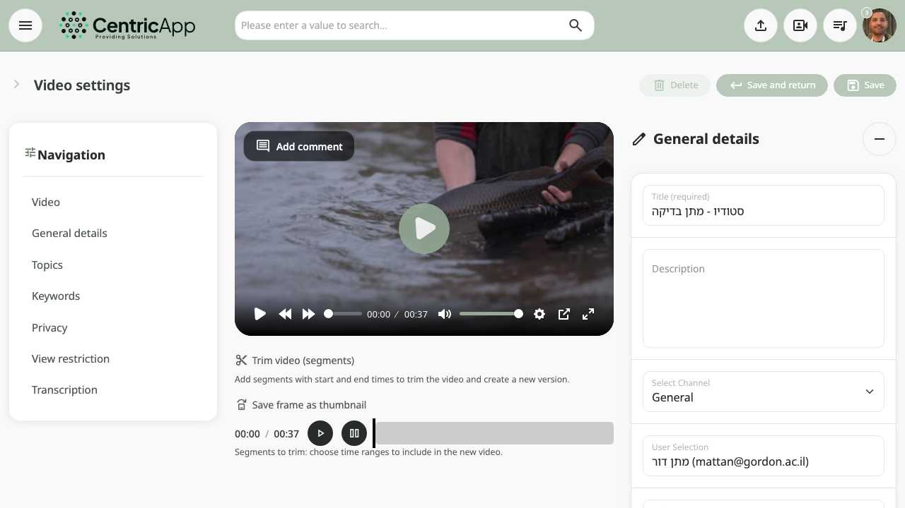
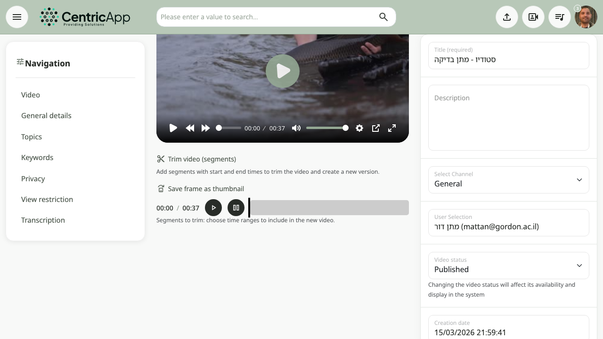
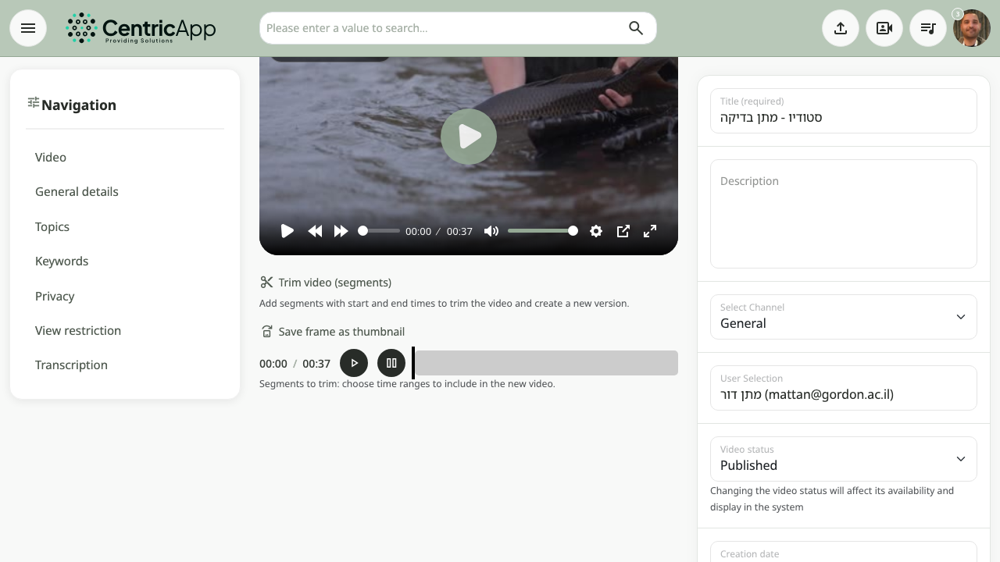
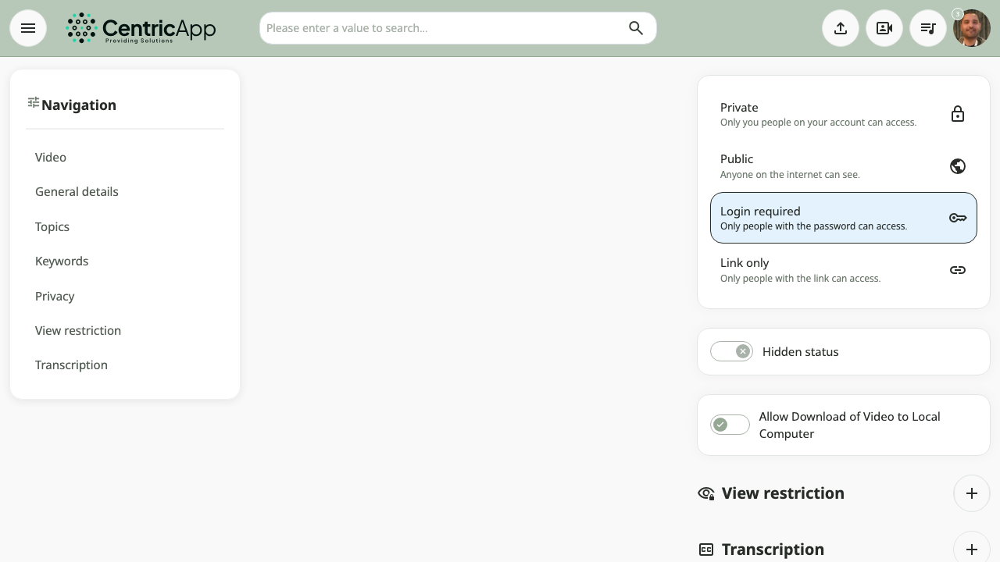
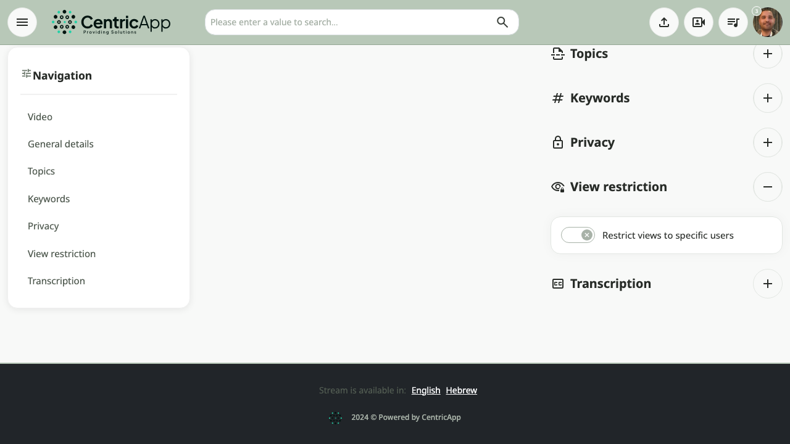
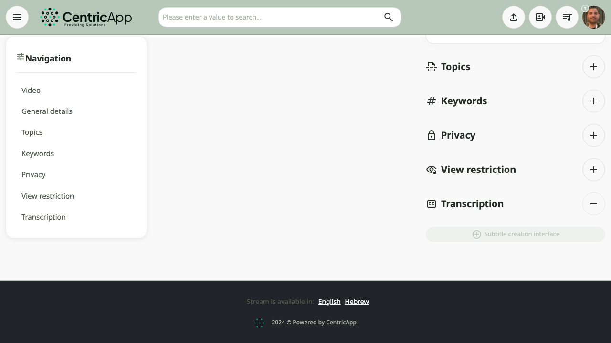

מבט כללי
מסך ההגדרות נפתח מניהול הסרטונים: לחיצה על עריכה ליד הסרטון. בצד שמאל מופיע ניווט לפי אזורים; במרכז – הנגן והלשוניות (פרטים, נושאים, פרטיות ועוד).

סרטון וחיתוך (מקטעים)
באזור סרטון מוצג הנגן, כפתורי פעולה (למשל שמירת פריים כפוסטר), ובסרטונים שאינם מ־YouTube – גם חיתוך סרטון (מקטעים): הוספת מקטעים עם זמני התחלה וסוף ליצירת סרטון חדש מחתוך. מדריך מפורט: חיתוך וידאו בודד.

פרטים כלליים
בלשונית פרטים כלליים מגדירים:
- כותרת (חובה) – השם שמופיע ברשימות ובחיפוש.
- תיאור כללי – טקסט בעמוד הצפייה.
- ערוץ / קטגוריה – שיוך הסרטון לערוץ.
- בחירת משתמש (למנהלים) – בעלות על הסרטון.
- סטטוס סרטון (למנהלים) – טעינה, בתהליך, מפורסם, מוסתר וכו'.
- תאריך יצירה.
- תמונת פוסטר – העלאת תמונה או שמירת פריים מהנגן.
- יצירת פוסטר אוטומטית – לפי פרטי הסרטון.

נושאים
נושאי הסרטון (פרקים / chapters) מגדירים נקודות זמן עם שם – לניווט בנגן וברשימות. ההוספה והעריכה מתבצעות מעל הנגן במסך זה: כפתורי נושא חדש ו־נושאים ליד הווידאו (כשהסרטון במצב מפורסם). מדריך שלב־אחר־שלב למרצים: נושאים (פרקים) בסרטון – הוספה ועריכה למרצה.
פרטיות
בלשונית פרטיות מגדירים:
- רמת פרטיות – ציבורי, פרטי או הרשאות ביניים (לפי ההגדרות במערכת).
- מצב מוסתר – הסרטון לא יופיע ברשימות אך יישאר נגיש למי שיש לו קישור (אם מופעל).
- אפשרות הורדה – האם לאפשר הורדת הסרטון למחשב (בסרטונים שאינם מ־YouTube).

הגבלת צפיות
בלשונית הגבלת צפיות (View restriction) ניתן להגביל את הצפייה לקבוצת משתמשים או למשתמשים מסוימים:
- סימון הגבלת צפיות למשתמשים מסוימים – הפעלת ההגבלה.
- סוג הגבלה – משתמשים מסוימים, קבוצת משתמשים, או כל המשתמשים (לפי ההגדרות).
- בחירת משתמשים או קבוצות מהרשימות (כולל חיפוש משתמש).
ניתן גם לצפות בסטטיסטיקת הגבלת צפיות אם האפשרות מופיעה.

כתוביות
בלשונית כתוביות (מוצגת רק לסרטונים שאינם מ־YouTube) ניתן לעבור לממשק יצירה או עריכת כתוביות. הלשונית מספקת קישור לדף ייעודי לכתוביות של הסרטון.
